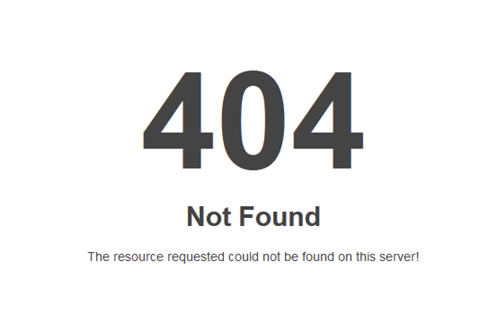

When Type Becomes a Style
A new way of arranging words and images can change how we read them. But what happens when that experiment becomes a style we see everywhere?
These three essays follow that question from the page to the gallery wall. McCoy and Frej explore how layout invites readers to interpret a text. Mr. Keedy examines why museums and galleries share a recognizable look. Silvia Sfligiotti zooms in on one familiar choice: setting words in all caps. Read together, the essays ask what happens to the voice of a message when its typography becomes a habit.

This is Auto - Tune Typography
Silvia Sfligiotti
Typography as Discourse
Katherine McCoy and David Frej
The Global Style
Mr. Keedy